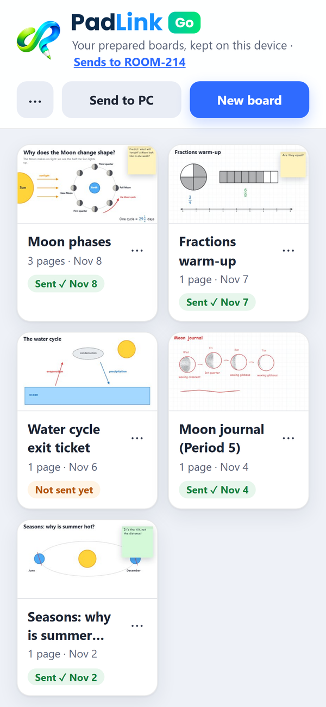
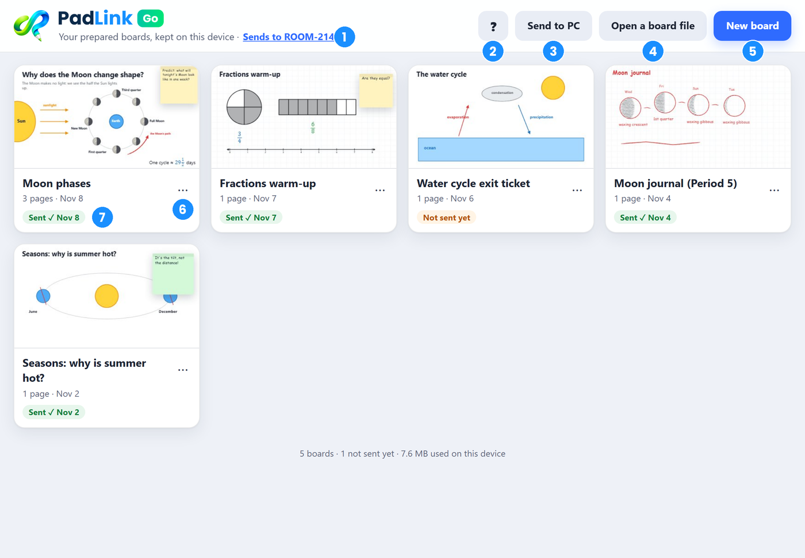
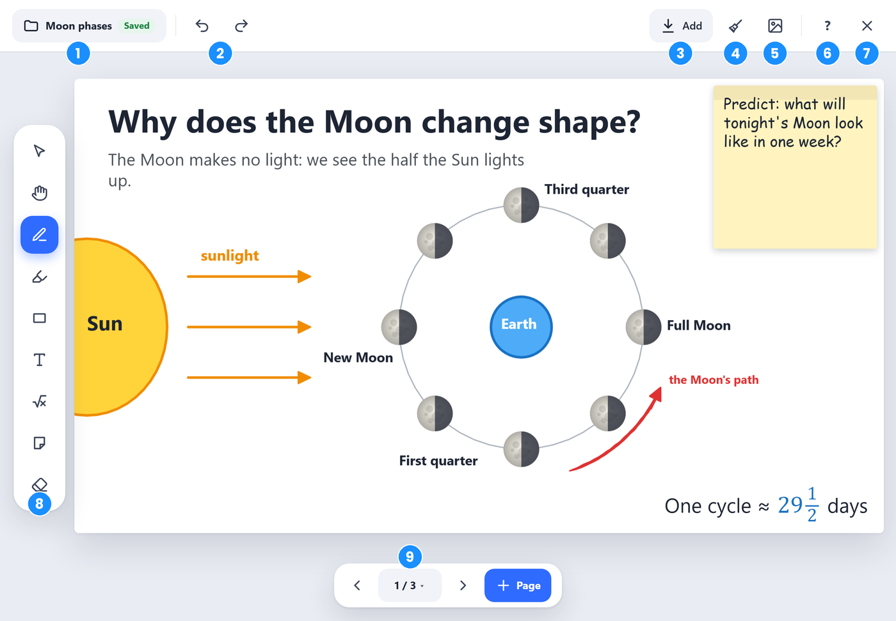
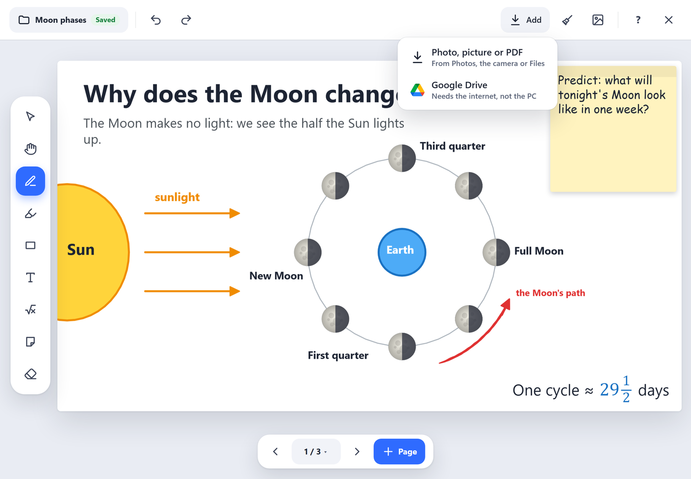
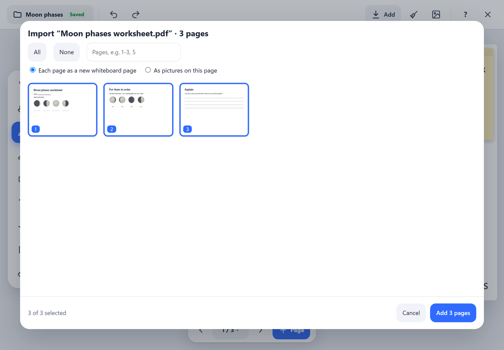
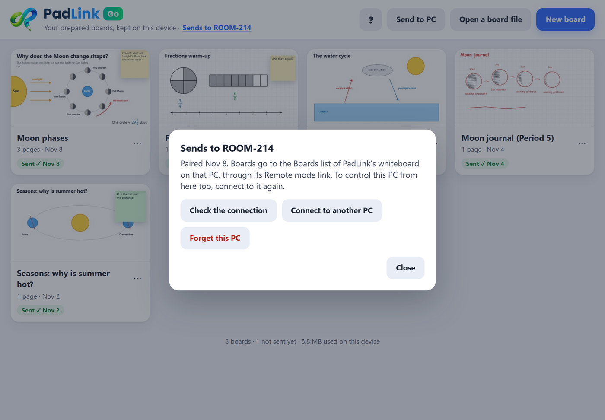
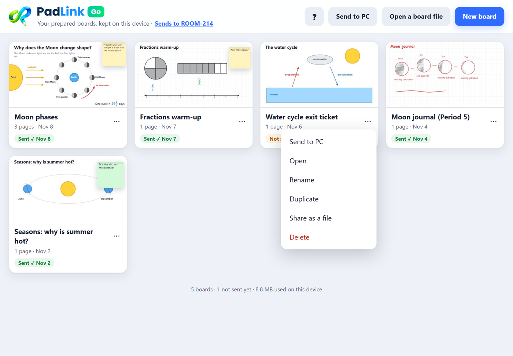
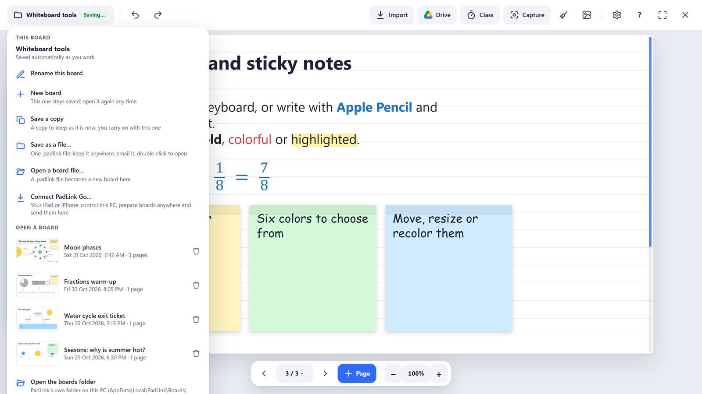

Guide › Planning lessons
Planning lessons
Prepare your boards on the couch, on the bus or in the staff room with PadLink Go on your iPad or iPhone, then send them to your classroom PC. No PC or internet needed while you plan.
1. Two ways to plan
- On the PC: open the whiteboard and start a New board. Boards save themselves as you work. See Boards: saving and opening.
- Anywhere, with PadLink Go: the same whiteboard on your iPad or iPhone, without the PC. Your boards stay on the device until you send them to the PC.
2. Get PadLink Go
- On your iPad or iPhone, open padlink-app.github.io in Safari. (Or scan the PadLink Go QR code in the PadLink window on your PC.)
- Tap Share → Add to Home Screen.
- From now on, open PadLink Go from its Home Screen icon.

3. Your boards
PadLink Go opens on your boards, newest first.

- Which PC your boards go to. Tap it to connect, check the connection, or switch PCs.
- Help: how PadLink Go works.
- Send to PC: sends every board that hasn't been sent yet.
- Open a board file: a
.padlinkfile from Files, email or AirDrop. - New board.
- …: more for this board (see below).
- Sent ✓ or Not sent yet. Changed since sent means you edited it after sending.
Tap a board's picture to open it.
4. Make a board
A board has the same tools as the classroom whiteboard: pens, highlighter, shapes, fractions, text, math, sticky notes, pages and paper (plain, grid, lines, dots or chalkboard). Everything you know from Teaching with the whiteboard works here.

- Board name: rename it, start a new board or open another. Saved means it's kept on the device; it saves as you work.
- Undo and Redo.
- Add: photos, pictures, PDFs and Google Drive files.
- Clear the page (it asks first; Undo brings it back).
- Save the page as a picture, through the share sheet.
- Help.
- Close, back to your boards.
- Tools, with their options beside them.
- Pages: previous, the page number (opens Pages: every page, and Duplicate, Paper, Hide from students for this one), next, and + Page.
- On an iPad: Apple Pencil draws with the tool you picked. A finger moves the page, and a pinch zooms.
- On an iPhone: your finger draws like the Pencil.
5. Add PDFs and pictures
Tap Add, then Photo, picture or PDF to choose from Photos, the camera or Files.

A PDF worksheet opens the page chooser:
- Every page is chosen at first. Tap a page to leave it out, use All or None, or type pages like
1-3, 5. - Choose Each page as a new whiteboard page (best for worksheets you'll write on) or As pictures on this page.
- Tap Add.

PDFs open right on the device, so this works with no internet too.
6. Google Drive
- Tap Add → Google Drive.
- Google's own file picker opens (the page shows which Google account it will use). Sign in if asked, then browse your folders, Shared with me or shared drives, or search. Next time it goes straight to the same Google account; tap Use a different Google account to switch.
- Pick a file. A picture comes straight onto the board. Google Slides, Docs and Sheets arrive as a PDF, so the page chooser opens to pick the slides or pages you want.
Files you've used before are listed the next time you open Google Drive: every Drive file you've added with PadLink, in a list sorted A–Z. Switch to a grid, or sort by Recent, and it remembers your choice next time. Search by name, or tap PDFs, Slides, Docs, Sheets or Pictures to show only those. Tap one and it comes straight to the board, with no Google screens. For anything else, tap Find a new file in Google Drive. That's Google's own picker: its sort menu is Google's, and PadLink can't set it. On the PC it opens on Recently picked, the files you've added with PadLink before, with My Drive, Shared with me, Shared drives and All files beside it.
Google Drive needs the internet, but not the PC. PadLink only ever gets the one file you pick.
On an iPad or iPhone, Google asks you to Allow each time you find a new file. That's Google's rule for its full-screen picker, the one that works well with touch. Files from your list skip it.
7. Send boards to your PC
Connect once:
- On the PC, turn on Remote mode in the PadLink window.
- In PadLink Go, tap Connect to your PC → Scan the PC's code, and point at the QR code in the PadLink window. (On the PC whiteboard: board name → Connect PadLink Go shows a code too.)
- Check the numbers match, and click Allow on the PC.
Then send: tap Send to PC at the top (every board not sent yet), or … → Send to PC for one board. They appear in the whiteboard's Boards list on the PC, ready for class.

- Sending again updates the same board on the PC. If it was changed on the PC since, yours arrives as a copy, so nothing is lost.
- More than one classroom (or a PC at home)? Connect to another PC keeps both. The control button names the PC it controls (Control ROOM-214), and with two or more PCs it asks Control which PC? first. The one you pick is the PC in use for sending boards too. Sent ✓ always means sent to the PC you're using now.
- The PC must be on, with PadLink open, to receive boards.
8. Rename, copy, share or delete
Tap … on a board:

- Send to PC: just this board.
- Open, Rename.
- Duplicate: a copy to change for another class (Period 3 and Period 5, say).
- Share as a file: a
.padlinkfile to keep in Files, email to a colleague, or open in PadLink on any PC. - Delete. It asks first, and warns you when the board hasn't been sent anywhere, because then it's the only copy.
9. Opening them on the PC
On the PC whiteboard, click the board name (top left). Boards you sent are in the list under Open a board.

Your iPad can also open them: More → Boards while the whiteboard is open.